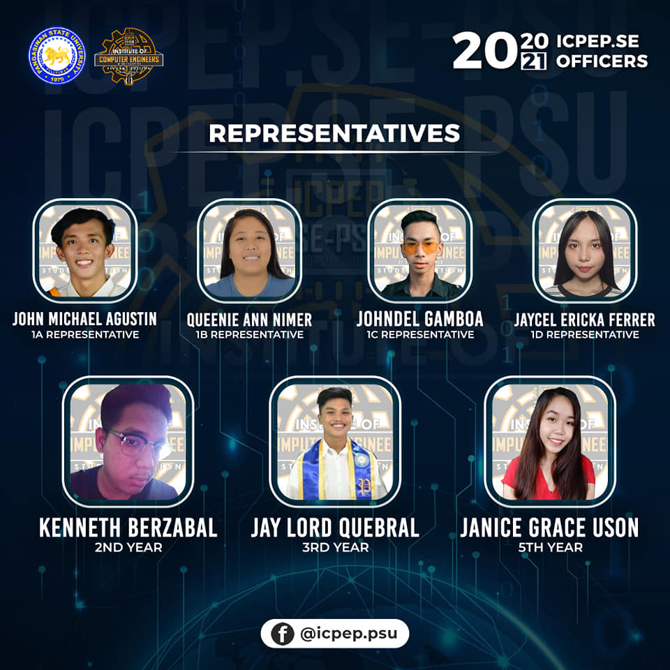
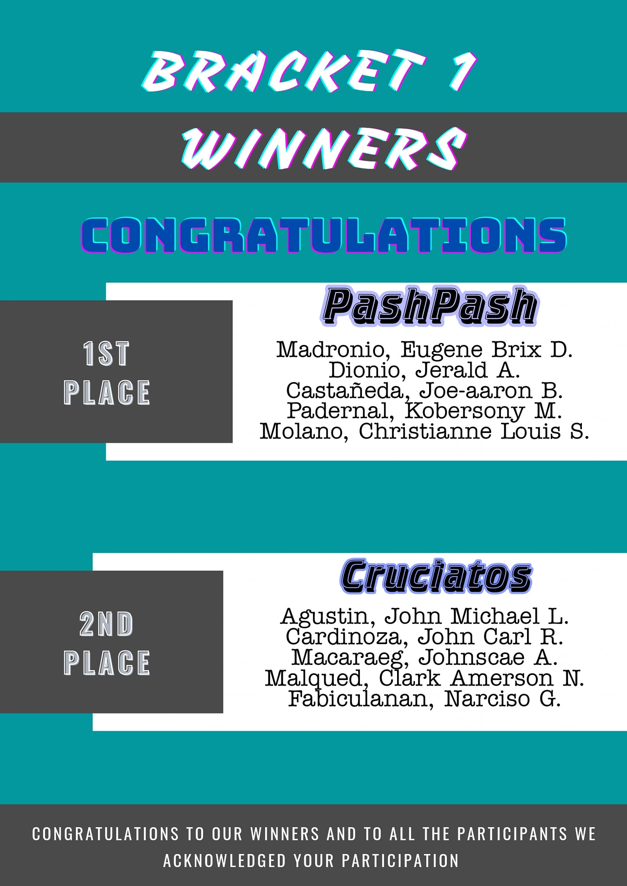
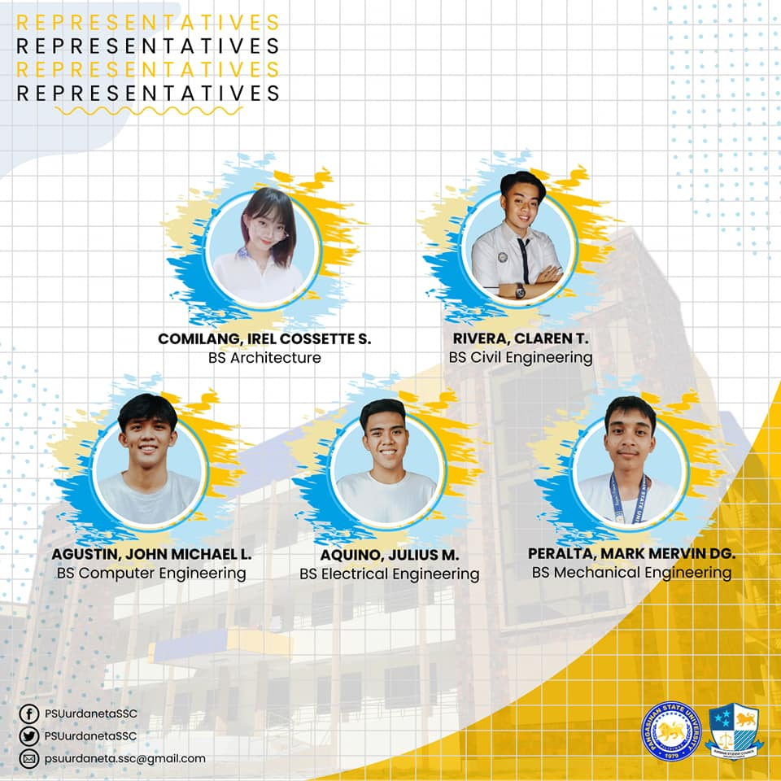
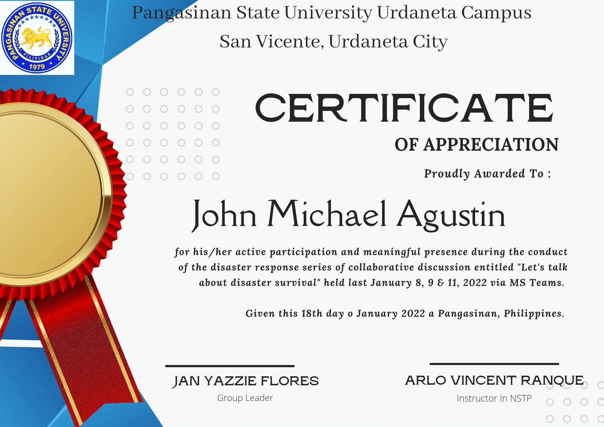
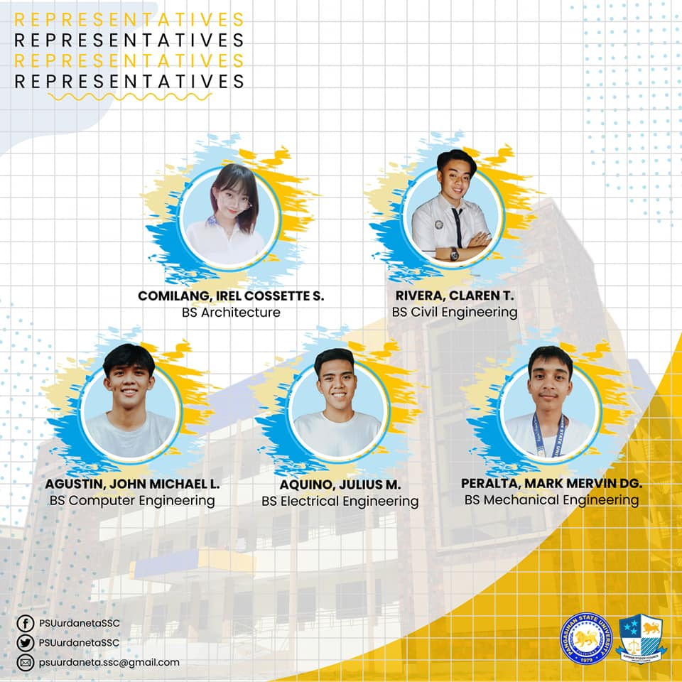
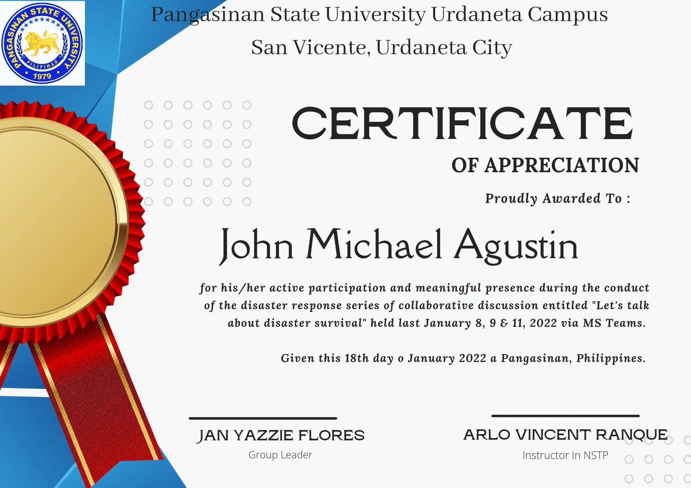
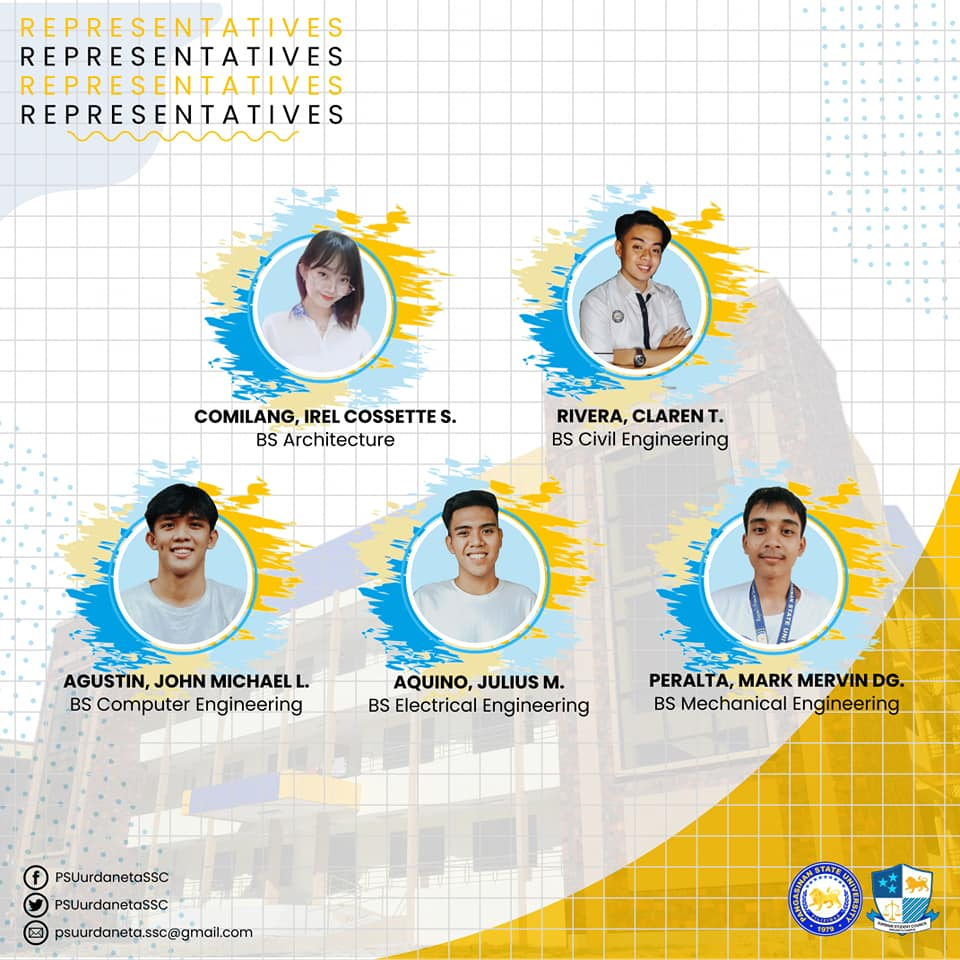
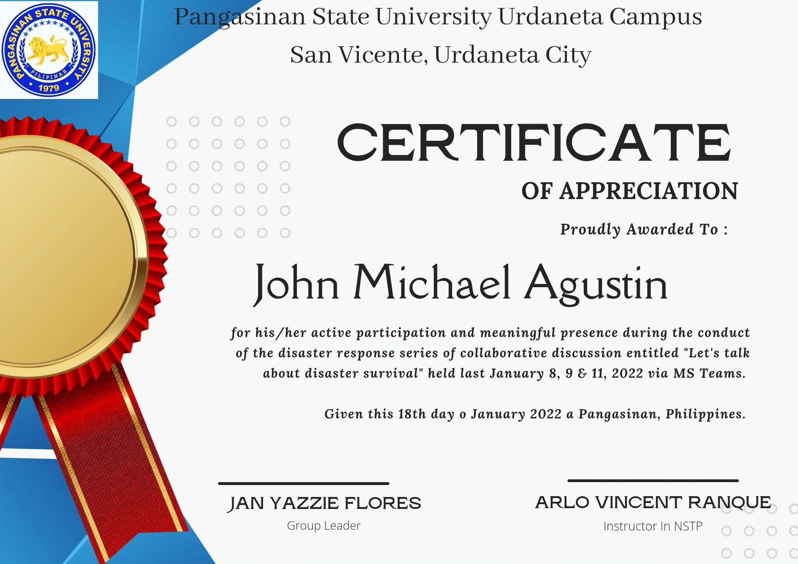
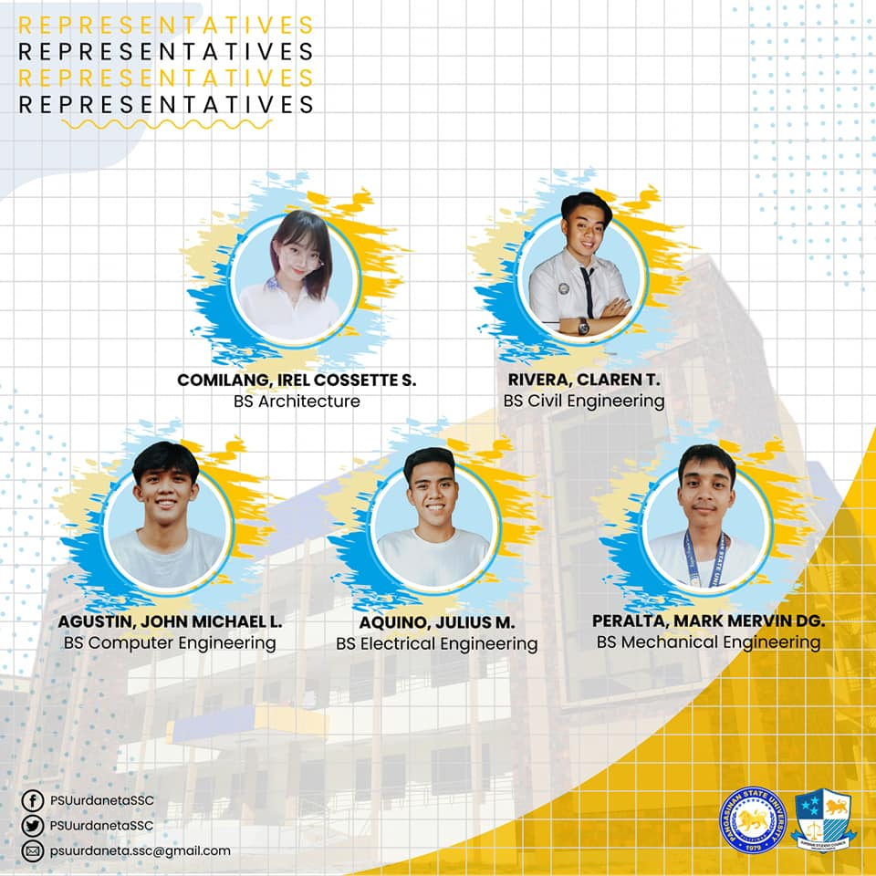
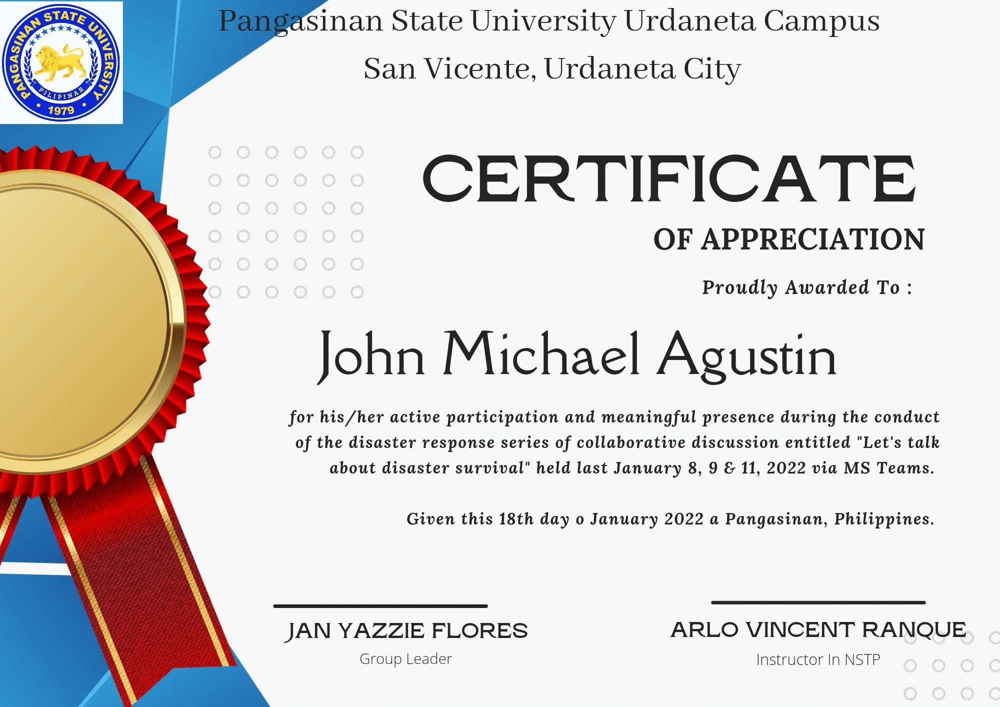

PORTFOLIO


 





My name is John Michael L. Agustin. I was born and raised in Binalonan Pangasinan. I am a 20 year old student at Pangasinan State University. The road to student success means hard work, dedication, and willfulness. Perseverance entails persisting in the face of adversity, regardless of how easy it may appear to give up. Around the age of 16, I had my first true experience of tenacity while battling anxiety and despair. I was fighting a mental struggle, not knowing what was going on at such a young age. I was a delicate child who was developing not only on the outside but also on the inside of my head. Everything felt awful and overwhelming, from waking up, getting dressed, arriving on time, dealing with friends and teachers, to my real coursework and grades. When I eventually told my parents what was going on inside my head, they responded with unfathomable love, courage, and patience. My parents were strongholds in my battle with anxiety and depression thanks to God's infinite mercy and love. Every day, my mother and father supported me with sweet words, prayers, music, quotations, and scripture. All of those types of support were used by God to help me persevere in my fight against depression and anxiety and reclaim my life. Perseverance, I feel, is a requirement for graduating from college. I shall continue to face numerous hurdles as I work toward my course. So far, I've suffered with time management, money compromises, and missing out on pleasant events as a result of these numerous obstacles. Maintaining my mental, emotional, spiritual, and physical wellness has been a top focus for me. My drive to succeed is based on my failures in the past. I put other people and things ahead of my education at the start of my college career. Thankfully, I learnt what tenacity and accomplishment mean to me at a young age. I enjoy working out in my spare time. Hiking,and bicycling are some of my favorite ways to stay in shape. Currently, I am a member of Supreme Student Council of Pangasinan State University.

